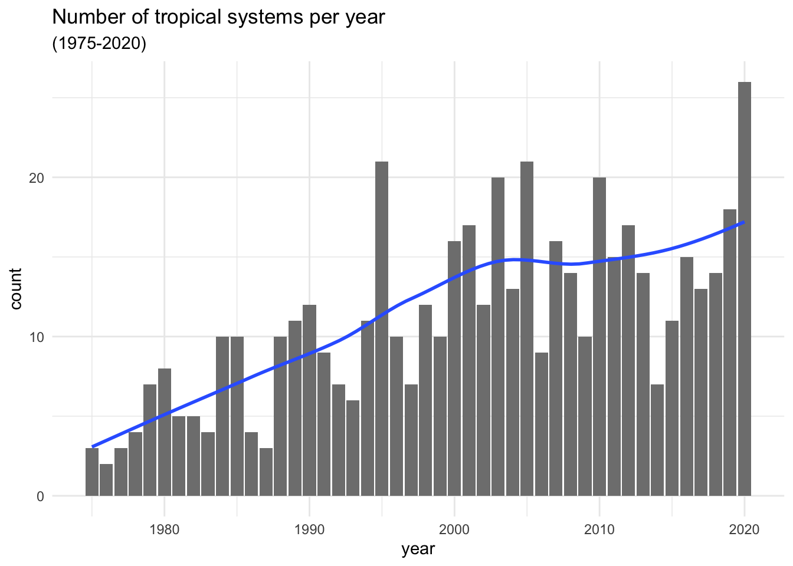

12 Counting Tropical Systems
In chapter 4 we quickly explored the values in column year, discovering the
45-year period of recorded data from 1975 to 2020. We can take a further step
and ask:
How many storms are there in each year?
To answer this question, we need to do some data manipulation. My general
recommendation when working with "dplyr"’s functions, especially
when you are learning about them, is to do computations step by step, deciding
which columns you need to use, which rows to consider, which functions to call,
and so on.
Attempt Number 1
To find the number of storms per year, think about the columns that you need to
select. Also think about the operations that seem to be required to get such
count. You obviously need to select year; and you need to count(). With
this initial setting, you could assemble the following pipeline of commands:
# first attempt
storms %>%
select(year) %>%
count()## # A tibble: 1 × 1
## n
## <int>
## 1 11859Okay. This count is not what we are looking for. But before trying other ideas, spend some time reflecting on what the preceding command is doing.
Attempt Number 2
Perhaps we could add a group_by(year) operation before invoking count():
# second attempt
storms %>%
select(year) %>%
group_by(year) %>%
count()## # A tibble: 46 × 2
## # Groups: year [46]
## year n
## <dbl> <int>
## 1 1975 86
## 2 1976 52
## 3 1977 53
## 4 1978 54
## 5 1979 301
## 6 1980 161
## 7 1981 164
## 8 1982 105
## 9 1983 79
## 10 1984 236
## # … with 36 more rowsThis output looks more interesting. The returned output is a table with two
columns: year and n. But after careful inspection, you should notice
something awkward. While the first column makes complete sense, the second
column n does not seem to be very helpful. Are there really 86 tropical
systems in 1975? Are there 52 systems in 1976? And so on, and so forth?
Of course not; 1975 did not have 86 systems. The numeric values under column
n simply refer to the number of entries (i.e. rows) associated to each year.
You may not know this, but the previous table of counts can be obtained using a
more compact command without the need to use select() and group_by(); you
can just simply invoke count(year):
# same output of preceding command, only using count()
storms %>% count(year)## # A tibble: 46 × 2
## year n
## <dbl> <int>
## 1 1975 86
## 2 1976 52
## 3 1977 53
## 4 1978 54
## 5 1979 301
## 6 1980 161
## 7 1981 164
## 8 1982 105
## 9 1983 79
## 10 1984 236
## # … with 36 more rowsAttempt Number 3
What if instead of counting year we count based on column name? For example:
# third attempt
storms %>% count(name)## # A tibble: 214 × 2
## name n
## <chr> <int>
## 1 AL011993 8
## 2 AL012000 4
## 3 AL021992 5
## 4 AL021994 6
## 5 AL021999 4
## 6 AL022000 12
## 7 AL022001 5
## 8 AL022003 4
## 9 AL022006 5
## 10 AL031987 32
## # … with 204 more rowsMmm. Again, not the count that we are looking for. On a side note, observe the
values displayed in the first rows of the returned table: e.g. AL011993,
AL012000. These alphanumeric names correspond to names of tropical depressions
that never reached tropical storm status. In other words, those system were
not strong enough to be given a name, e.g. Amy, Caroline, Doris, etc.
Attempt Number 4
So far we’ve tried—unsuccessfully—counting based on column year alone,
and also on column name alone. None of these columns, in and of itself, is
enough because for any given storm or any given year we have multiple entries
with duplicated values.
Again, the following suggestion may not seem obvious, but you can also try
counting by taking into account both year and name
# fourth attempt
storms %>% count(year, name)## # A tibble: 512 × 3
## year name n
## <dbl> <chr> <int>
## 1 1975 Amy 30
## 2 1975 Caroline 33
## 3 1975 Doris 23
## 4 1976 Belle 18
## 5 1976 Gloria 34
## 6 1977 Anita 20
## 7 1977 Clara 24
## 8 1977 Evelyn 9
## 9 1978 Amelia 6
## 10 1978 Bess 13
## # … with 502 more rowsCompared to the previous attempts, this output looks more promising. Finally, we can see that there were three (named) storms in 1975, two in 1976, three more in 1977, etc. However, we still don’t have those specific counts: 3, 2, 3, etc. But at least we are making some progress in what it seems to be the right direction.
Attempt Number 5
Why not taking the preceding command, and adding an extra count() but only
considering year?
# fifth attempt
storms %>% count(year, name) %>% count(year)## # A tibble: 46 × 2
## year n
## <dbl> <int>
## 1 1975 3
## 2 1976 2
## 3 1977 3
## 4 1978 4
## 5 1979 7
## 6 1980 8
## 7 1981 5
## 8 1982 5
## 9 1983 4
## 10 1984 10
## # … with 36 more rowsVoila! Now we are talking. This table contains precisely the counts that we are looking for: number of systems in each year.
For convenience purposes, let’s assign this table into its own object,
which we can call system_counts_per_year, or some other meaningful name
that you might prefer to use:
system_counts_per_year <- storms %>%
count(year, name) %>%
count(year)
system_counts_per_year## # A tibble: 46 × 2
## year n
## <dbl> <int>
## 1 1975 3
## 2 1976 2
## 3 1977 3
## 4 1978 4
## 5 1979 7
## 6 1980 8
## 7 1981 5
## 8 1982 5
## 9 1983 4
## 10 1984 10
## # … with 36 more rowsNow that we have the counts or frequencies, it would be nice to visualize them with a barchart, like the following one:

Let’s discuss how to obtain this kind of graphic in the next chapter.